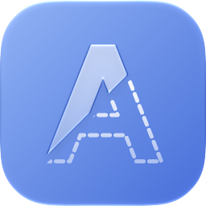

Alphade
Politique de confidentialité
Alphade ne collecte aucune donnée. Vos vidéos restent sur votre Mac.
Ce que collecte Alphade
Rien. Alphade n’a ni serveur ni compte, et ne contient aucun outil d’analyse, de publicité ou de suivi.
Où restent vos données
Alphade lit uniquement les vidéos que vous ouvrez et écrit uniquement les vidéos que vous exportez, le tout sur votre Mac. Pendant l’analyse d’une vidéo, Alphade conserve une copie temporaire de la zone encadrée dans son propre dossier temporaire et la supprime dès qu’elle n’est plus nécessaire. Rien n’est envoyé en ligne.
Tiers
Aucun.
Modifications de cette politique
Si cette politique change, cette page sera mise à jour, ainsi que la date ci-dessus.